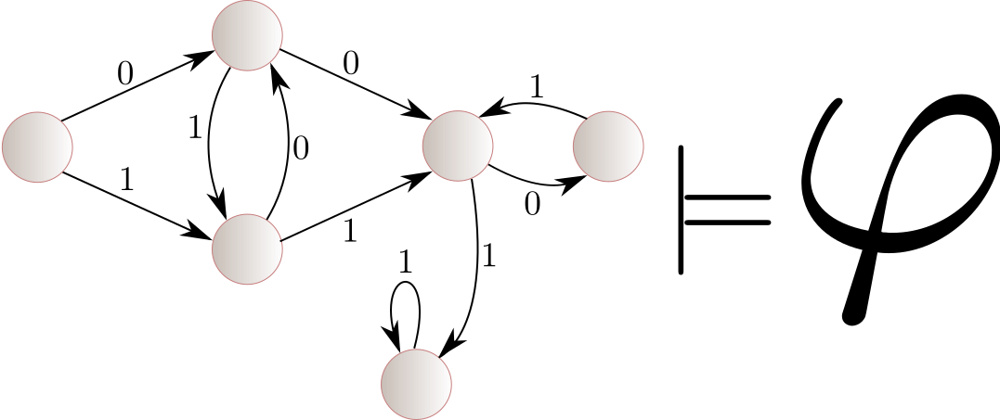
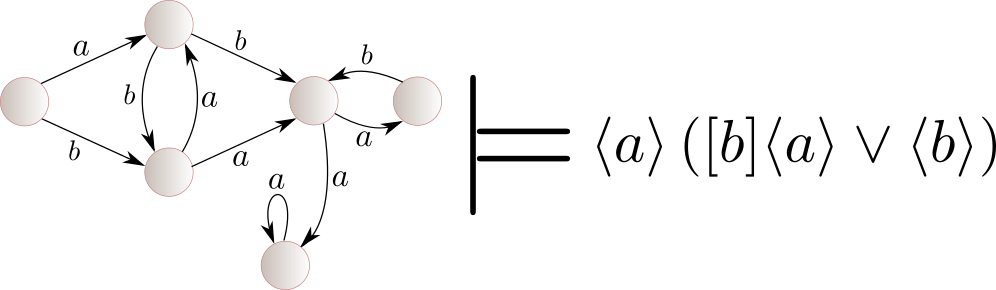
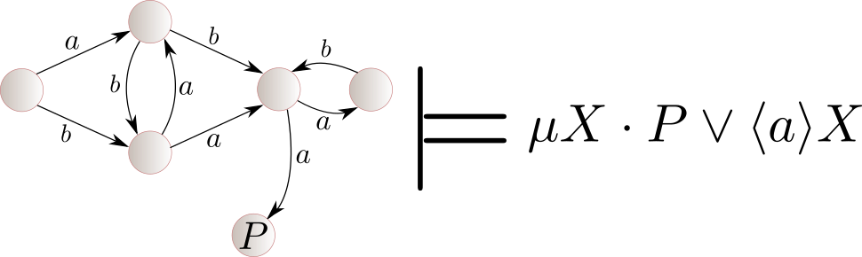
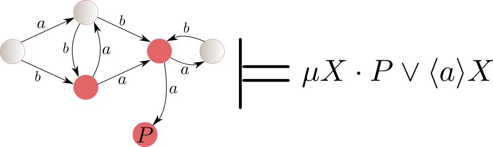
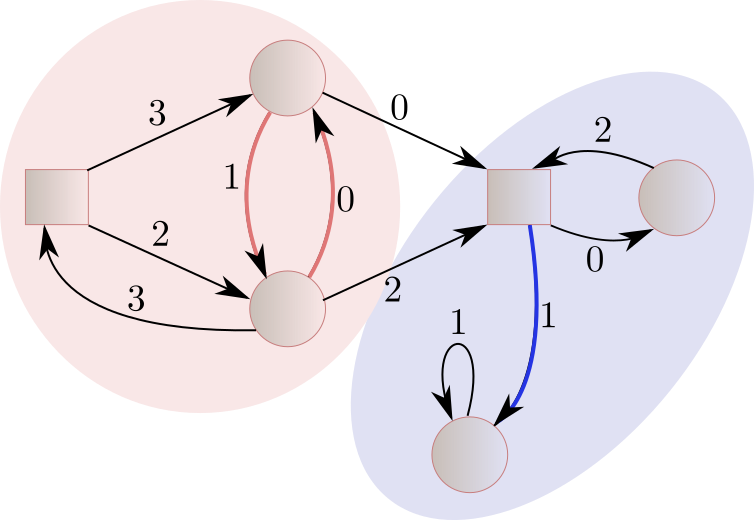

Nathanaël Fijalkow
CNRS, LaBRI, Bordeaux, and The Alan Turing Institute, London
Model-checking games: an introduction
Main objectives
- discuss parity games as model-checking games for modal $\mu$-calculus
- introduce the notion of universal graphs and their applications to (parity) games
- give a simple and unified presentation of all three quasipolynomial time algorithms
- show tight lower bounds for the construction of algorithms in this framework
Model checking

The non-exciting case of modal logic

The exciting case of modal $\mu$-calculus

The naive algorithm
Knaser-Tarski approximation

size of the graph: $n$, alternation of fixed points in the formula: $d$, complexity $$O(n^d)$$
Parity games
 Parity
Parity: the maximal priority appearing infinitely often is
even
Solving parity games
INPUT: A parity game$
QUESTION: Does Eve have a winning strategy?
Parameters: $n$ (number of vertices) and $d$ (number of priorities)
Best algorithms (Calude, Jain, Khoussainov, Li, and Stephan STOC best paper award 2017, then Jurdziński and Lazić 2017, then Lehtinen 2018)
$$O(n^{\log(d)}) = O(d^{\log(n)})$$
Complexity: in $\textrm{NP} \cap \textrm{coNP}$, not known to be in $\textrm{P}$!
Positional strategy
$$\sigma : V \to E$$
Theorem: If Eve has a winning strategy in a parity game, she also has a positional winning strategy. The same holds for Adam.

Universal graphs
Definition: A graph
satisfies parity if all paths in the graph satisfy parity (eq: all cycles have maximal even priority)
Definition: A (graph) homomorphism is $\phi : V \to V'$ st
$$(v,p,v') \in E \Longrightarrow (\phi(v),p,\phi(v')) \in E$$
Definition: A graph $U$ is
$(n,d)$-universal if
- it satisfies parity
- all graphs of size $n$ with $d$ priorities satisfying parity can be homomorphically mapped into $U$
Reduction to safety games
Let $G$ a $(n,d)$-parity game, $U$ a $(n,d)$-universal graph.
Construct a game $G \times U$.
From $(v,q)$:
- the player controlling $v$ chooses $(v,p,v') \in E$
- Eve chooses $(q,p,q') \in U$
Lemma: Eve has a winning strategy in $G$ if and only if she has a strategy to play forever in $G \times U$
Proof:
If Eve wins in $G$ she has a positional strategy. Then $G_{\sigma}$ embeds into $U$, induces a winning strategy in $G \times U$
If Eve wins in $G \times U$ then this strategy is winning in $G$ because $U$ satisfies parity
We reduced solving a parity game of size $(n,d)$ to solving a safety game of size $n \cdot |U|$!
Main results
Theorem:
- There exists a quasipolynomial universal graph (three constructions, one for each quasipolynomial time algorithm)
- All universal graphs have at least quasipolynomial size
Perspectives
Universal graphs can be used to revisit many other model-checking games,
taking into account other aspects such as resource consumptions (from linear logic)